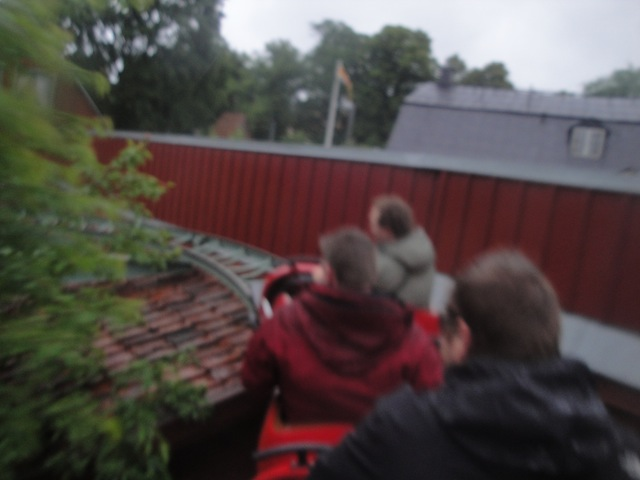
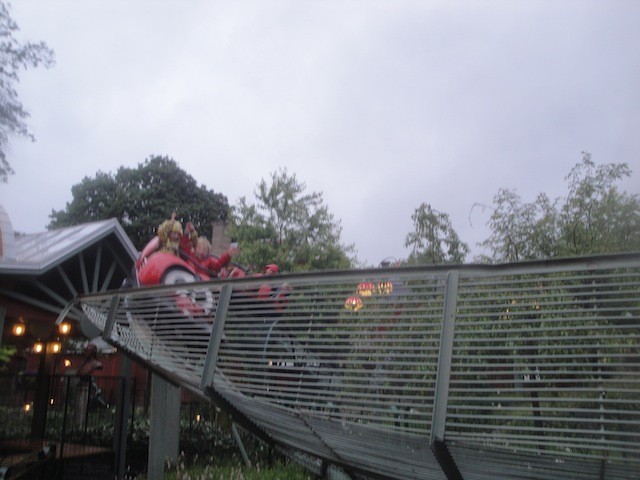
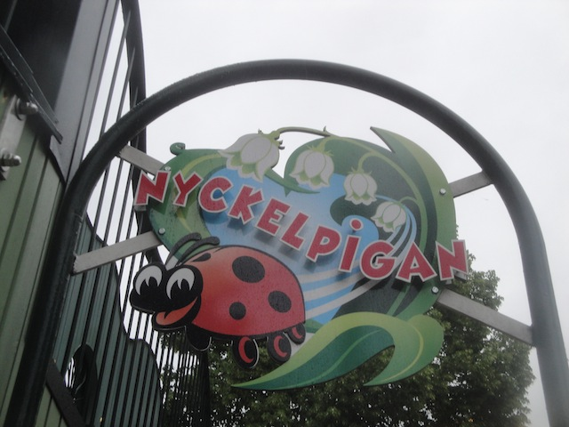

| |
Nyckelpigan Review

We're here at Gröna Lund to review their (kiddy) kiddy coaster, Nyckelpigan. Yeah, this is not only a kiddy coaster, but a kiddy kiddy coaster. Yes, even by Kiddy Coaster Standards, this thing is absolutely pathetic. But...*sigh* We're credit whores. And amazingly, Gröna Lund has TWO coasters like this. So hop on board. After getting in the trains and ignoring all the death stares directed at us for riding something outside our age range (F*CK THAT!!!), we're off. We head up the lifthill, which is approximately the size of you if you're a tall guy (Anything over 6 ft). We then head down the tiny little drop. Wee...F*ck this. It's too boring to even pretend interest. We head around a tiny little hill, go around a turn, and dip down. We head over another dip, and turn back into the station. OK. We got the credit. Can we get off now? Nope. You have to go around a bunch more times because the kids wanna go again and again and again. *Groan* Such is the price a credit whore must pay. This ride is for small kids and credit whores ONLY.
1/10
Location: Gröna Lund
Opened: 1976
Built by: Zeirer
Last Ridden: June 23, 2014
I have ridden this exact same ride at the following parks.
Bakken
Glenwood Caverns Adventure Park
Lagoon
Parc Asterix
Särkänniemi
Tivoli Gardens
Nyckelpigan Photos



Home
|